Adaptation of a Plant
This cactus has adapted it "leaves" into sharp spines for both protection from predators and to give itself shade.
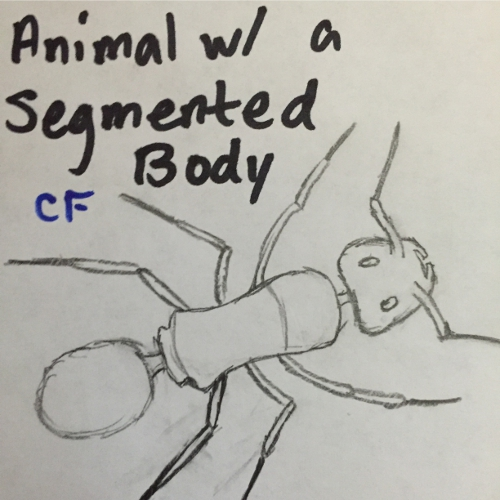
Animal with a Segmted Body
Ants have three segments in their body: head, thorax, and abdomen.
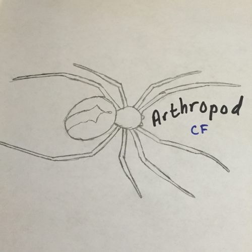
Arthropod
Arthropods are invertebrate animals with segmented bodies and an exoskeleton. They compose the phylum arthropoda which includes insects, crustaceans, trilobites, and spiders such as the one above.
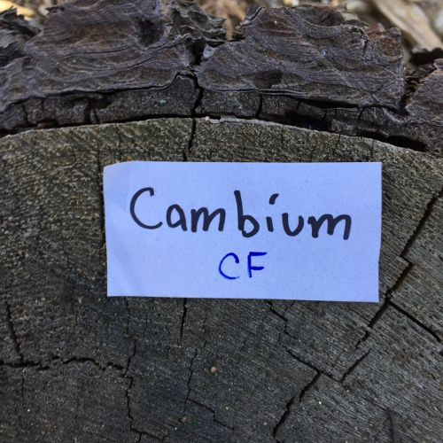
Cambium
The cambium of this tree lies between the bark and sapwood of the tree. It is responsible for the production of xylem (sapwood) and phloem (bark).
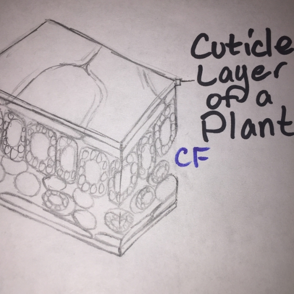
Cuticle Layer of a Plant
The cuticle layer of a leaf acts as a protective barrier against external water and contaminants as well as a barrier that keeps water inside the leaf.
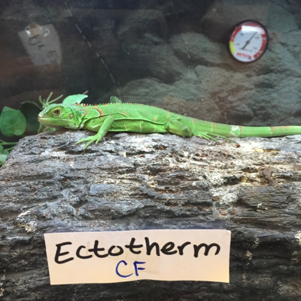
Ectotherm
Ectothermic organisms such as this iguana depend on external sources to regulate internal temperature. The Sun could be considered a heat source to most ectotherms.
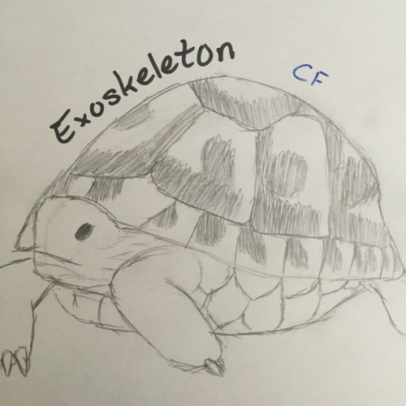
Exoskeleton
Tortoises have both an exoskeleton and an endoskeleton. Insects and crustaceans are another group of animals with exoskeletons.
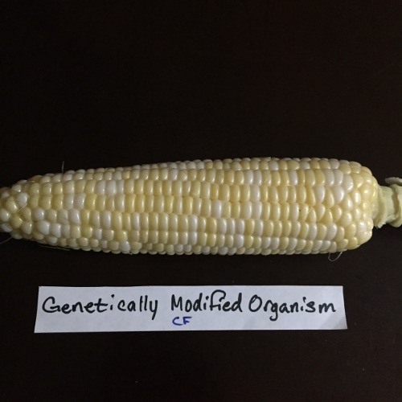
Genetically Modified Organism
Corn has been genetically modified to be resistant to herbicides as well as produce its own insecticide to help farmers.
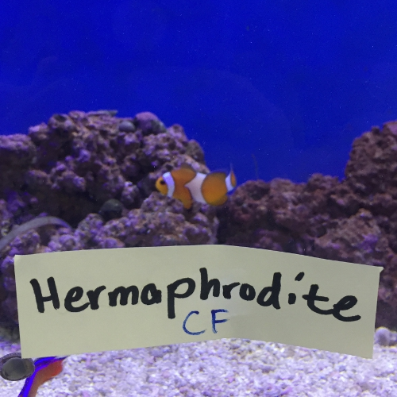
Hermaphrodite
Hermaphrodites have the ability to participate in both roles of sexual reproduction. Clownfish have the ability to become female if the previous female in the group leaves.
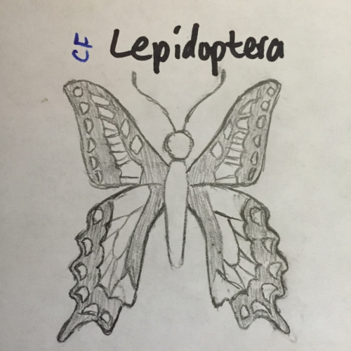
Lepidoptera
Lepidoptera is an order that is comprised of butterflies and moths. Members of the order are called lepidopterans.
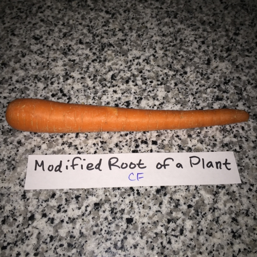
Modified Root of a Plant
Carrots are an example of a modified root because the plant has modified its root to store lots of sugar.
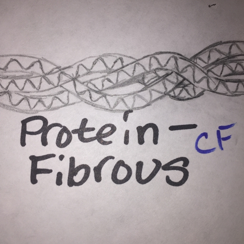
Protein: Fibrous
Fibrous proteins are one type of protein and are more resistant to denaturing compared to globular protein.
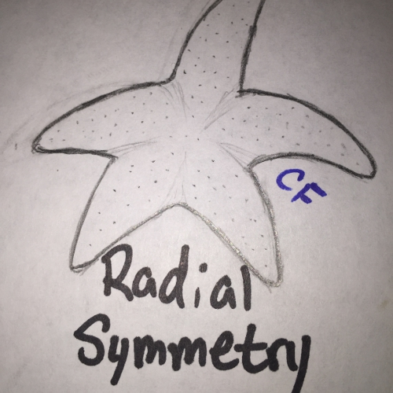
Radial Symmetry
This starfish is an example of radial symmetry because it has multiple lines of symmetry intersecting its center.
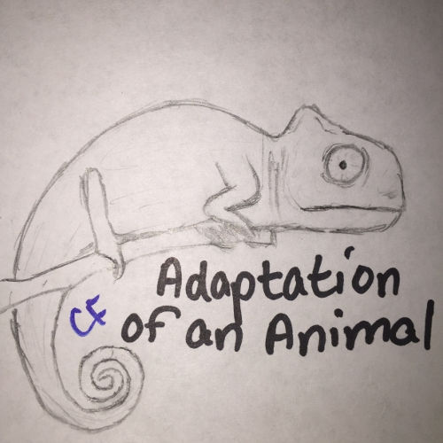
Adaptation of an Animal
This chameleon has adapted to its environment by being able to camouflage.
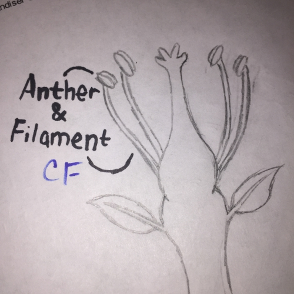
Anther and Filament of a Stamen
The anther of a flower is responsible for pollen production while the filament supports the stamen up for easier accessibility.
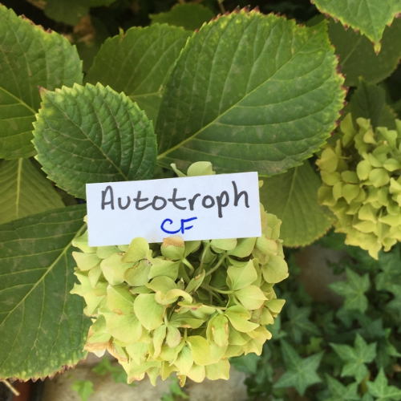
Autotroph
Autotrophs such as the plant pictured above have the ability to make their own food, usually through photosynthesis, and don't rely on eating other organisms to obtain energy.
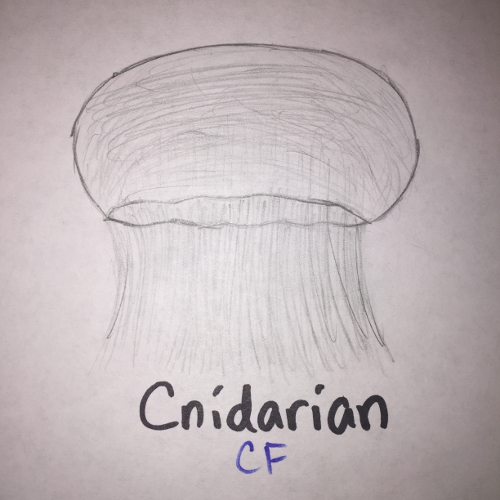
Cnidarian
Cnidarian is a phylum comprised mostly of jellyfish.
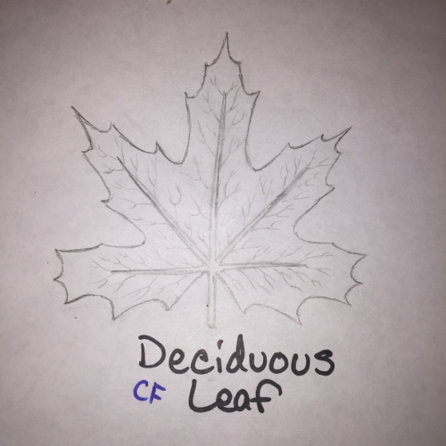
Deciduous Leaf
The word "deciduous" means something is prone to lose or shed something. In the case of deciduous trees, the trees often lose their leaves during autumn.
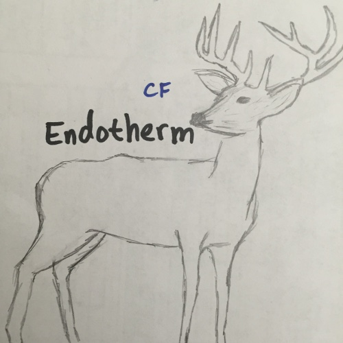
Endotherm
All mammals, including the deer shown above, are examples of endothermic organisms because they can maintain their internal temperature by using the heat exerted from internal functions.
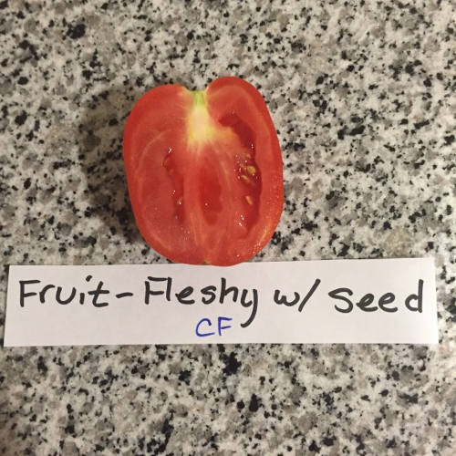
Fruit: Fleshy with Seed
A fruit is considered fleshy if its tissue is succulent at full maturity as opposed to dry fruits.
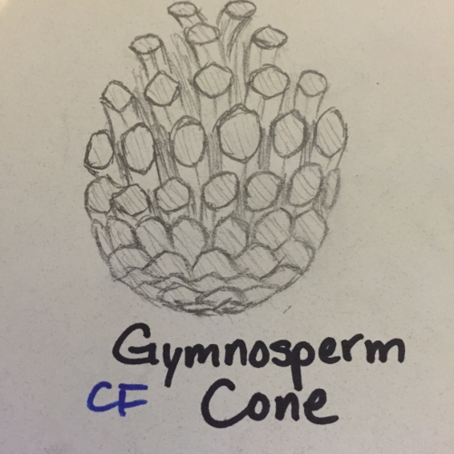
Gymnosperm Cone
Gymnosperms such as pine trees can produce cones like the pine cone pictured above.
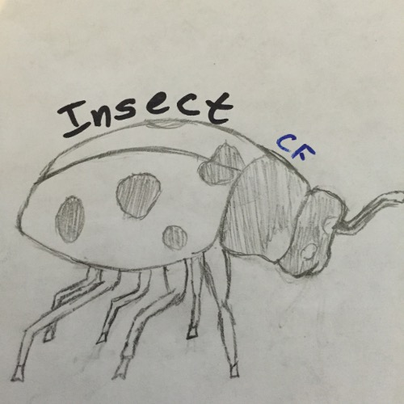
Insect
Insects are a group of animals that have an exoskeleton, six legs, and a segmented body including the head, thorax, and abdomen.
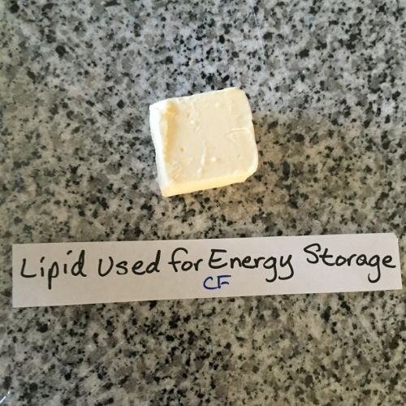
Lipid Used for Energy Storage
Triglycerides such as the butter pictured above are used for energy storage in animals. They are made with three fatty acids and glycerol.
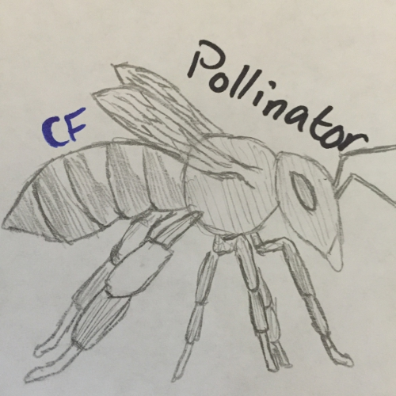
Pollinator
Pollinators are responsible for moving pollen from the anthers of one plant to the stigma of another.
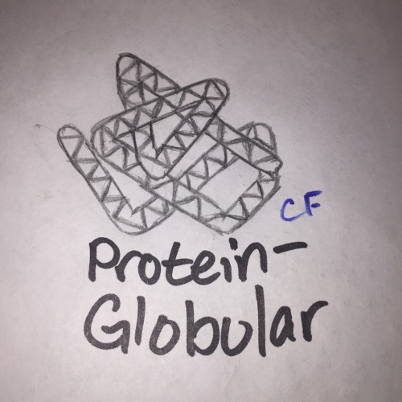
Protein: Globular
Globular proteins are another type of protein and are soluble in water.
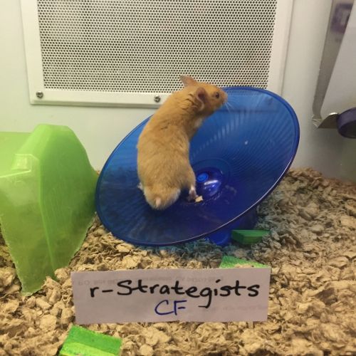
r-Strategist
This hamster produces many offspring, each with a small chance of surviving to sexual maturity. This makes hamsters an example of r-strategists.
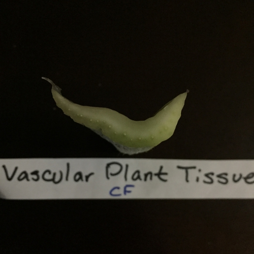
Vascular Plant Tissue
The small holes on the celery stalk are tubular structures called vascular plant tissues. It contains both the xylem and phloem of the plant. The tube structure helps transport water and minerals.
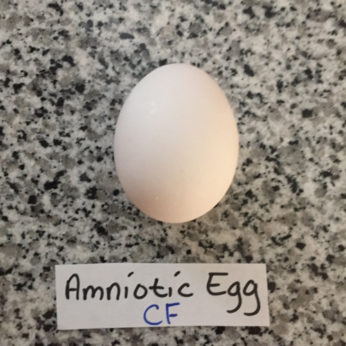
Amniotic Egg
This egg was laid by a chicken which is an amniote because of its ability to lay eggs on land rather than in water.
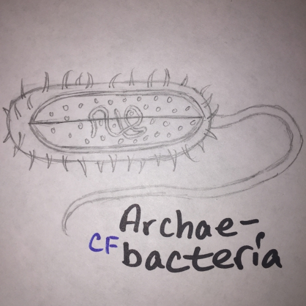
Archaebacteria
Archaebacteria are prokaryotic organisms with no nucleus or membrane-bound organelles. They have a cell wall and are able to digest.
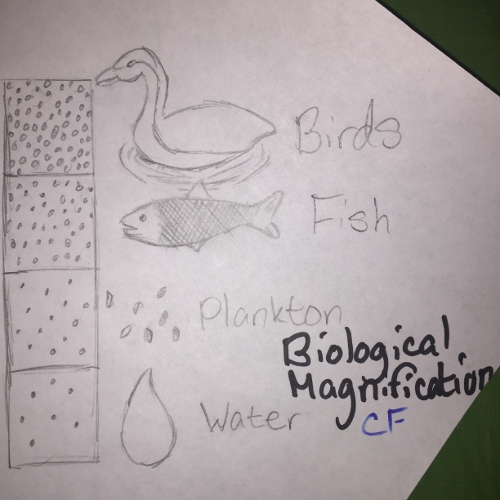
Biological Magnification
Biological magnification occurs when a toxin in an environment increases the farther up the food chain it goes. In this example, water has a low concentration while birds have a higher concentration.
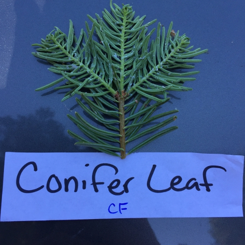
Conifer Leaf
This leaf belonged to a Sequoia tree which is an example of a Conifer. Conifers are considered gymnosperms and are able to produce cones.
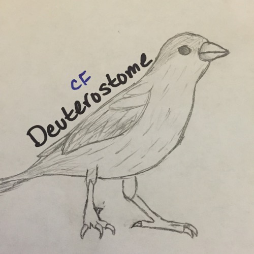
Deuterstome
Vertebrates, like the bird above, are an example of deuterostomes because, as an embryo, the first dent that forms, called the blastopore, forms the anus as opposed to protostomes, which form the mouth first.
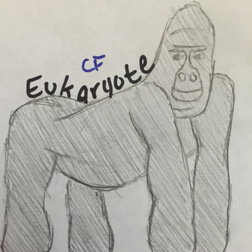
Eukaryote
Eukaryotic cells are different from prokaryotic cells because they have membrane-bound organelles, including a nucleus. Eukaryotic organisms can be both multicellular or unicellular. The gorilla above is an example of a eukaryotic organism.
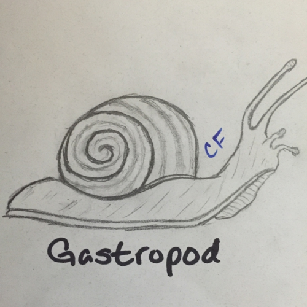
Gastropod
The class Gastropoda is comprised entirely of slugs and snails such as the one pictured above. It is the largest class in the phylum Mollusca.
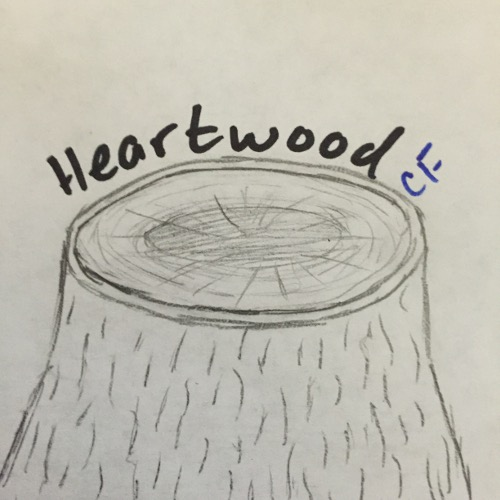
Heartwood
Heartwood is located at the center of a tree trunk and usually looks darker than the surrounding sapwood. In the image above, the heartwood is the darker circle inside the trunk.
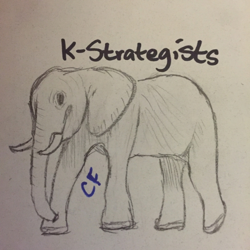
K-Strategist
Elephants are an example of K-strategists because they produce few offspring that each have a high chance of surviving to sexual maturity.
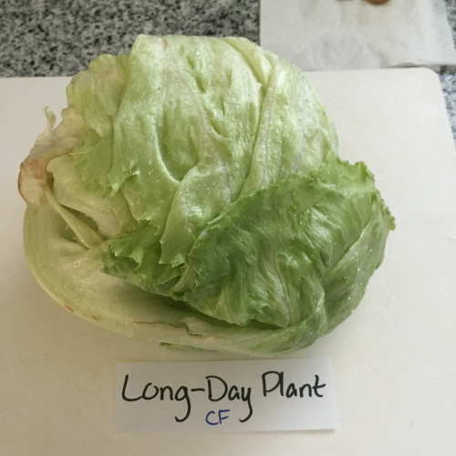
Long-Day Plant
Lettuce is considered a long-day plant because it flowers most during the time of year when days start getting longer (before the summer solstice).
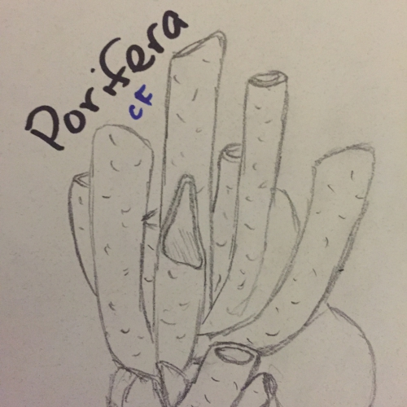
Porifera
The sponge above is one member of the phylum Porifera. Sponges are found underwater and have lots of pores that allow water to go through and inside the sponge.
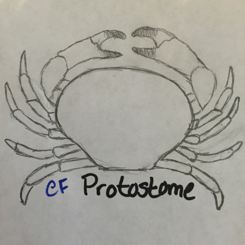
Protostome
Crustaceans are an example of protostomes because the first dent that forms as an embryo becomes the mouth of the organism.
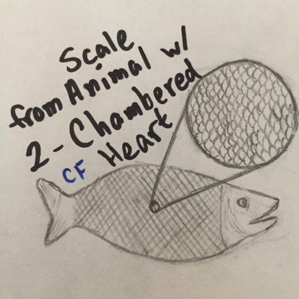
Scale of an Animal with a Two-Chambered Heart
Fish have a two-chambered heart meaning they only have one atrium and one ventricle.